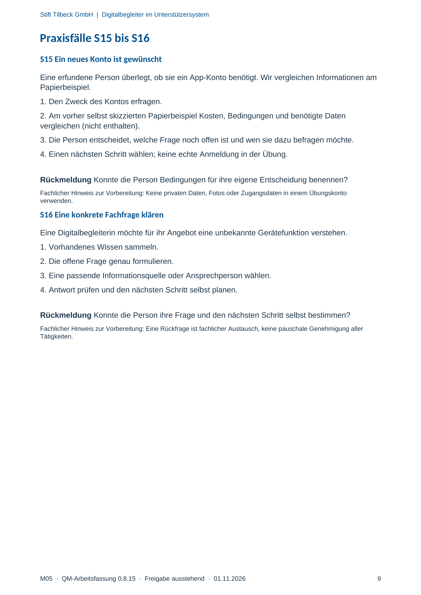

M05 · Originalseite 9
Ein neues Konto ist gewünscht
Original-Druckseite mit S15. Auf derselben Seite stehen außerdem S16. Diese sind dadurch keine zusätzliche Aufgabe.
Fragen und Ankreuzfelder werden auf dem Ausdruck bearbeitet. Die Lesefassung speichert keine Antworten.
Lesefassung · Seite 9
Stift Tilbeck GmbH | Digitalbegleiter im Unterstützersystem
Praxisfälle S15 bis S16
S15 Ein neues Konto ist gewünscht
Eine erfundene Person überlegt, ob sie ein App-Konto benötigt. Wir vergleichen Informationen am
Papierbeispiel.
1. Den Zweck des Kontos erfragen.
2. Am vorher selbst skizzierten Papierbeispiel Kosten, Bedingungen und benötigte Daten
vergleichen (nicht enthalten).
3. Die Person entscheidet, welche Frage noch offen ist und wen sie dazu befragen möchte.
4. Einen nächsten Schritt wählen; keine echte Anmeldung in der Übung.
Rückmeldung Konnte die Person Bedingungen für ihre eigene Entscheidung benennen?
Fachlicher Hinweis zur Vorbereitung: Keine privaten Daten, Fotos oder Zugangsdaten in einem Übungskonto
verwenden.
S16 Eine konkrete Fachfrage klären
Eine Digitalbegleiterin möchte für ihr Angebot eine unbekannte Gerätefunktion verstehen.
1. Vorhandenes Wissen sammeln.
2. Die offene Frage genau formulieren.
3. Eine passende Informationsquelle oder Ansprechperson wählen.
4. Antwort prüfen und den nächsten Schritt selbst planen.
Rückmeldung Konnte die Person ihre Frage und den nächsten Schritt selbst bestimmen?
Fachlicher Hinweis zur Vorbereitung: Eine Rückfrage ist fachlicher Austausch, keine pauschale Genehmigung aller
Tätigkeiten.
Originalseite ansehen
